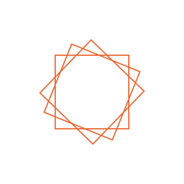

Essay · Issue four
The rule and the pull
Every printed edition is an argument between a system that wants to repeat exactly and a hand that cannot. The interesting work lives in the gap, and the gap is not a defect.

Screenprinting is a rule system with a body attached. The plate says where the ink may go and the squeegee decides how much arrives, and only one of those two is a specification. Everything that makes an edition worth owning happens in the second one.
A generative rule set has the same shape. The rules are exact and the output is not, because the output has to land somewhere physical — a screen at some pixel density, a sheet at some humidity, a plate pulled by an arm that tires across forty copies. Designers who have only ever shipped to screens tend to read that variation as noise to be removed. Printers read it as the work.
The distinction matters more than it sounds. If the variation is noise, the correct move is to tighten tolerances until the fortieth pull is indistinguishable from the first — and that is achievable, at the cost of everything that made the process worth choosing over a printer.
Registration drift across an edition of forty is typically under 0.4mm. Visible at arm's length; invisible in a photograph, which is why catalogues flatten the argument.
If the variation is the work, the correct move is the opposite: specify the rule tightly enough that the drift has something to drift against. A loose rule plus a loose hand gives mush. A tight rule plus a loose hand gives a series.
What a system owes the hand
This is not a romantic argument about craft. It is a structural one, and it has a test: can you state the rule without reference to the output? If you can, the rule is doing work. If the only way to describe it is to point at the result, there was no rule — there was a taste exercised repeatedly, which is a different and much less transferable thing.
Design systems fail the same test in the same way. A token that means "the blue we used on the marketing site" is a taste with a name on it. A token that means "the ground everything else is measured against" is a rule, and it survives a rebrand, a dark mode and a new designer.
The second half of the argument is about limits. A rule set that can express anything expresses nothing, and the constraint that makes a series legible is almost always the one that felt arbitrary when it was set. Four plates, not five. One family, not three. Eight categorical hues, and if you need a ninth the chart is wrong.
Which is the same reason a print run ends. Forty is not a manufacturing limit — the screen would keep going. Forty is a decision that this particular argument has been made enough times, and the number is part of the work in exactly the way the plate order is.
A tight rule plus a loose hand gives a series. A loose rule plus a loose hand gives mush.
None of which resolves the original argument, and it should not. The gap between the specification and the sheet is where the edition lives. Close it completely and you have a file. Leave it open and you have forty things, each of which is the argument made once.
The only real mistake is pretending the gap is not there — printing forty and calling them identical, or shipping a system and calling it neutral. Both are claims about the world that the world declines to honour.